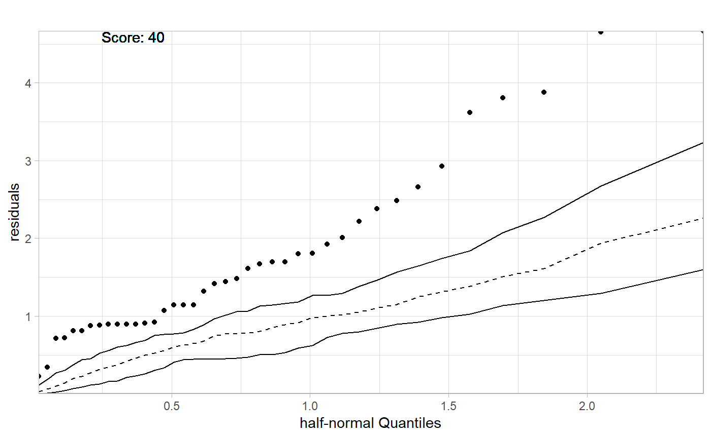
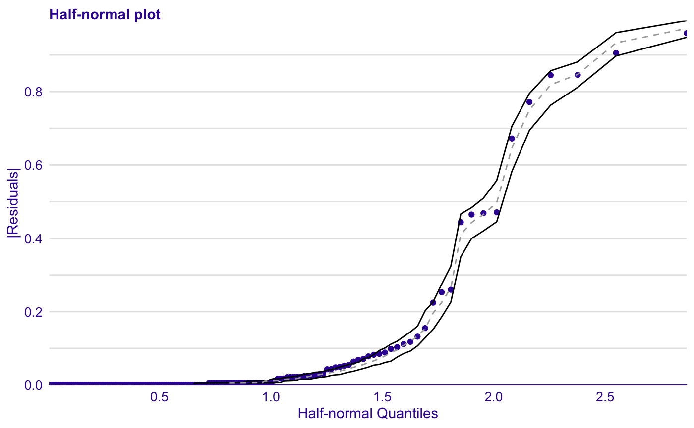

Model Fit Audit
Alicja Gosiewska
2019-08-21
Source:vignettes/model_fit_audit.Rmd
model_fit_audit.Rmd#Model Fit audit
Half-normal plot
The half-normal plot presented in this chapter is one of the tools designed to evaluate the goodness of fit of a statistical model. It is a graphical method for comparing two probability distributions by plotting their quantiles against each other.
Points on the plot correspond to ordered absolute values of model diagnostic (i.e. standardized residuals) plotted against theoretical order statistics from a half-normal distribution.
There are various implementations of half-normal plots in R. Functions for generating such plotes are available in packages auditor, faraway, hnp, but also in others. Some functions can only draw a simple half-normal plot, while some have additional functionalities like a simulated envelope and score of goodness-of-fit.
auditor::plotHalfNormal()
Function plotHalfNormal() offers a plotting interface for half-normal plots generated by hnp package in a unified style using ggplot2. Additional functionalities not included in the hnp are scores and the possibility to draw half-normal plot on a quantile scale.
Below we present example of the use of half-normal plots for a generalized linear models. Plots are generated by plotHalfNormal() function from package auditor.
By default, deviance residuals were used as diagnostic values.
Use-case
We will use dataset corn from the hnp package. For more details on the data set and models see Moral, R., Hinde, J., & Demétrio, C. (2017). Half-Normal Plots and Overdispersed Models in R: The hnp Package.
If diagnostic values are from the normal distribution, they are close to a straight line. However, if they don’t come from a normal distribution, they still show a certain trend. Simulated envelopes can be used to help verify the correctness of this trend. For a well-fitted model, diagnostic values should lay within the envelope.
Binomial model
First step of auditing is fitting a model and creating an explainer object with DALEX package which wraps up a model with meta-data.
model_bin <- glm(cbind(y, m - y) ~ extract, family = binomial, data = corn)
bin_exp <- DALEX::explain(model_bin, data = corn, y = corn$y)Second step is creating auditor_model_halfnormal object that can be further used for validating a model.
## Binomial modelauditor_model_halfnormal object may be plotted.

It doesn’t fit because of the overdispersion in data.
Classification
HalfNormal plots works also for classification random Forest.
In this case we consider the differences between observed class and predicted probabilities to be residuals.
library(randomForest)
iris_rf <- randomForest(Species ~ ., data=iris)
iris_rf_exp <- DALEX::explain(iris_rf, data = iris, y = as.numeric(iris$Species)-1)## Preparation of a new explainer is initiated
## -> model label : randomForest ([33mdefault[39m)
## -> data : 150 rows 5 cols
## -> target variable : 150 values
## -> predict function : yhat.randomForest will be used ([33mdefault[39m)
## -> predicted values : numerical, min = 0 , mean = 0.3333333 , max = 1
## -> residual function : difference between y and yhat ([33mdefault[39m)
## -> residuals : numerical, min = -1 , mean = 0.6666667 , max = 2
## [32mA new explainer has been created![39m
References
Moral, R., Hinde, J., & Demétrio, C. (2017). Half-Normal Plots and Overdispersed Models in R: The hnp Package. Journal of Statistical Software, 81(10), 1 - 23. doi:http://dx.doi.org/10.18637/jss.v081.i10